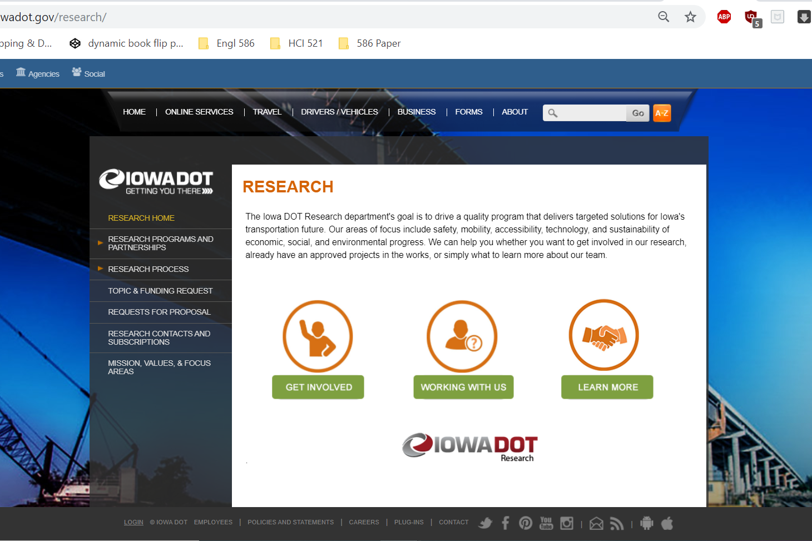
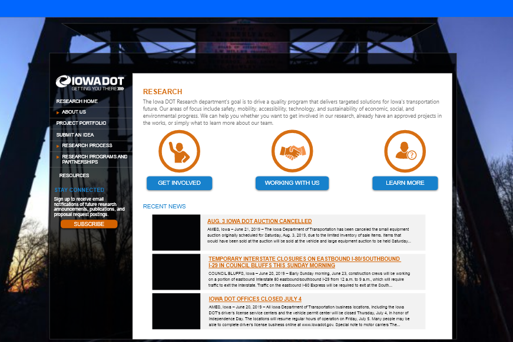
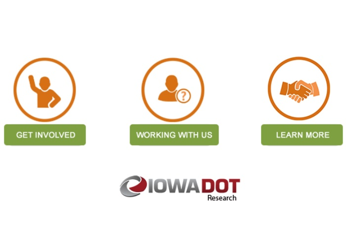
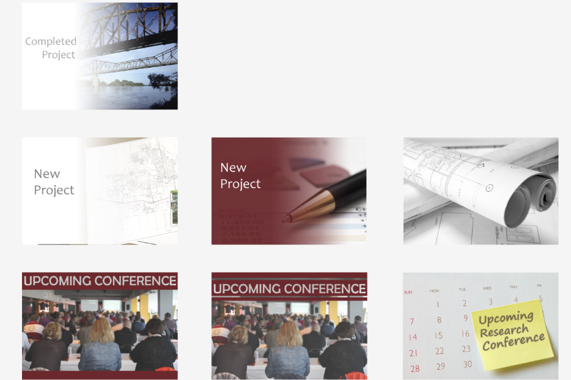

Web Design Intern
Iowa Department of Transportation | May 2019 - September 2019
Over the course of the 2019 Summer, I worked as a web design intern for the Iowa Department of Transportation. My main project was to work on a website redesign for the Research Department and in my down time, I worked on smaller projects for the web design team in the Strategic Communication Department.
Major Projects
DOT Research Department Webpages Redesign
The Research Department wanted to redesign their webpages. I created a design in Adobe XD with inspiration from Google Analytics, other state DOT websites, and current web design trends. After the design was finalized, I made updates to temporary CMS pages to practice then the real CMS using HMTL, CSS, JavaScript, and DotNetNuke tools.
DOT Homepage Reorganization Suggestions
The third click into the DOT website is a link farm. I created a site map, used Google Analytics, and analyzed user survey answers to make suggestions on how to shorten the list of links and the homepage design.
Minor Projects
- Zero Fatalities Charts
- Driver's Permit Manual Editing
- Career Fair Brochure
Programs Used
* These bars are based on the number of days I used a program compared to the number of days total days I worked.
Portfolio
Click on the images to learn more about the projects.
Research Website Redesign
Research Website Prototype
Research Website Icons
Research Article Thumbnails
DOT Homepage Suggestions